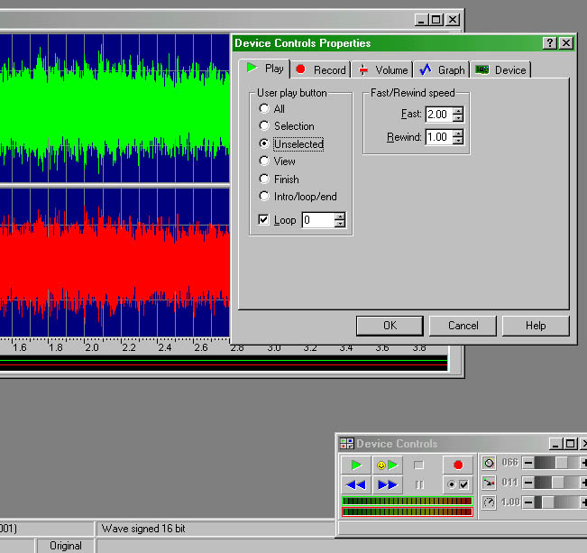

An Introduction To Making Sounds for MSTS
by by Chuck Zeiler
Overview
Unfortunately, there is little documentation on Sound for MSTS. This tutorial will get you started on the mechanics of taking a sound and making it work in MSTS.

|

|
Unfortunately, there is little documentation on Sound for MSTS. This tutorial will get you started on the mechanics of taking a sound and making it work in MSTS.
First, get Goldwave, if you don't already have it from http://www.goldwave.com.
Install and then open Goldwave.
In Goldwave, set up the Companion window:
Go to the toolbar. Select Window Companion. Put a checkmark in front of Device Controls. That will display the little window that I have placed in the lower right of this screen.
This window plays the sound, and can play the sound in a loop. The green arrow with the smiley face is the looping play button if you set it up this way.
Go to the toolbar:
Select Options | Controls, Select the Selection radio button, put a checkmark in Loop. Set Loop to "0". Press "Ok". The smiley face green arrow will now play the sound selection continuously. Press the blue box button to the right of the smiley arrow to stop the sound.
Load a sound.
To resample, select Effects | Resample.

Select the resample rate, which for MSTS is 11025hz. Later, when you get more familiar with this, you can resample at different rates to change the pitch. Right now you should stick with 11025hz. You can also adjust the volume in Effects, but you're probably better off adjusting the volume in the .sms file.
Now you can save the sound. Go to the toolbar, select File | Save As Select 16 bit stereo signed for the cab (inside) sound; select 16 bit mono signed for the external sounds.
An example of the MSTS convention for naming sounds would be: horn.wav for the inside sound, x_horn.wav for the outside sound. The inside (stereo) sound is only used for the #1 (cab view) position, and all other camera views use the external sound.
To make your outside sound match your inside sound (horn.wav, or whatever the name is), load the inside horn sound, do a File | Save As and save the inside sound as a 16 bit mono sound, and rename it to x_horn.wav.
Your horn may not play correctly this time, because we'll have to set up looping cues. There are two kinds of sound loops; the first needs cues, the second does not.
You can place as may cues as you wish, based on your personal judgment. I like to make short loops with just a couple of cues. My thinking is that these sounds must be loaded into memory by MSTS, and the more cues, the bigger the .wav file, and the bigger the .wav file is, the less room there is for all the other sounds which must also be loaded into memory (bell, air compressor, clicks for controls, etc.). Also, sounds do not compress very well, and if you plan to package (zip) your sounds for distribution, smaller sound files make for a smaller upload/download.
On the other hand, here's part of the MSTS default 380 whistle, and it has 16 cue points (little blue flags at the bottom) and is 5 seconds long.
"There is a point to these dense cue points. In the case of a whistle, when you release the spacebar (during playing) the sound is played up to the next cue point, then it goes to the final cue point and plays up to the end of the file.
"If the next cue point is far away from the point where you release the spacebar, You will hear the whistle for a time which is long and also variable, depending where the sound was playing when you released the spacebar. If the cue points are densely packed, the sound time after spacebar release shall be shorter and also less varying in length." (additional contribution here by Carlo Santucci).
Load your stereo version of the horn.wav file into GoldWave. My example, airwhistle1.wav, at right, shows a four second sample that I recorded.
I want to cut the length down to about one second, so I'm going to trim about four seconds out of the middle of this sample. You don't have to do this part; it's just my attempt to make a short horn blast. There may be another technique, and if there is, I'd like to hear about it.
To shorten the sample, go to the toolbar, selectOptions | Controls | Play, and select the Unselected radio button for the smiley face play button. This will play all the sounds that are NOT selected. Make sure there is a 0 (zero) in the Loop box at the bottom of the Controls, Options, Play window. This will play the loop an infinite number of times, or, until you press the blue Stop button.

Place the left selection by clicking with the left mouse button. The waves to the left of the selection go dark (unselected). Then move the cursor to the right and make the end selection by pressing the right mouse button. The waves to the right of the selection go dark (unselected). Now press the smiley face green Play button, and you will hear only to the unselected (dark) parts of the sound.
By left clicking on the left side, as the sound plays, you can adjust the start of the edit until it blends properly with the end edit point. Or, you can right click the right edit point and move it until it blends properly. You may have to adjust both points to get it to sound right. It takes a loop cycle or two for GoldWave to catch up with the position changes you make to these markers. The idea is to make it sound like one continuous short sound, without any wavering, abrupt changes or clicks. What I try to do is look for a couple of low points in the wave shape, and place my start and end edit points on those low points, hoping they match.
When you're satisfied with the way it sounds, you can delete the middle (selected, highlighted) part of the sound, either by going to Edit, Delete, or by clicking on the delete button on the toolbar. Now you have a one second sound sample. Push the smiley face Play button to make sure it's still OK.
You have one chance at Edit, Undo Delete (or Undo on the toolbar), which will restore the sound as it was before the delete operation. Otherwise, give it a name and save it.
If there's a click that you notice later, you can open this file in GoldWave, and do the same as above, and narrow in on just the click. When you find it, delete it and Save.<
Go back to Options | Controls, and select the radio button for Selection for the smiley button. Look for a couple of low points again. Place a start selection point (left mouse click) on the beginning of what will become the start of the continuous loop, and another one on the right (right mouse click). What you're doing is telling MSTS where to start the loop to continuously play the horn sound as long as the space bar is held down. The sound will start at the beginning, play through the first cue point, go to the second cue point, and return back to the first cue point, over and over between the cue points, until the space bar is released, then it will play through the last cue point and finish the sound, which fades off. So you want the piece between these two cue points to sound like a continuous sound, no variations in pitch or volume, and no clicks. This is how the long horn blast is created.
When you're satisfied with the way it sounds, left click on the first (left) cue point, go to the toolbar,Tools | Cue Points, in the "Name" box, put anything you want (I suggest a zero), Position is Start Marker, Description is anything you want (I suggest a zero), click on the ADD button.
A little blue flag should appear at the bottom of the cue point on the wave graphic screen.
Now the goofy part. Do the exact same thing you just did. This time, in the name box, put a number one, Position is Start Marker, Description is another number one, and click on the ADD button. Now, in the Cue List, highlight the first cue point you made (the zero) and delete it. This is because MSTS starts with cue #1, while GoldWave makes the first cue point a zero. So you have to make the zero cue point first, in order to make the #1 cue point, then delete the zero point, so MSTS doesn't get confused. Click OK. Left click on the end cue point, go to Tools, Cue Points, and do the same as you did for the other cue points, changing the numbers to 2. OK.
Give the file a name and save it. While it's still loaded, you can make the mono (external) version right now, so it will match the stereo version you just made. Go to File | Save As, and select 16 bit mono signed as the File Attributes, and add an x_ at the front of the file name. Save.
You can optionally make one additional change to the x_horn.wav, the mono (external) horn. Load it into GoldWave, go to Effects, Volume, and reduce the volume to 85%. Then, go to Effects, Echo, and add just a bit of echo. I'd suggest starting with the delay at 0.1, volume at 40 (this is why you reduced the volume earlier), and put a checkmark in Reverb. OK, Save.
When adjusting the volume, it's important that you don't let the wave graphic go beyond the window top or bottom. This will exceed the limits of the wave envelope, and result in clipping, which is basically distorted sound. GoldWave will prevent you from exceeding the limits by chopping the tops and bottoms off the sound, but bring the quieter sounds up. Once the sound is clipped, you cannot un-clip it. You can reduce the volume, but you'll notice that the tops of the waves have all been clipped off. You will have to load the original file and start again.
Now you will want to add these sounds to your locomotive. First, copy and paste the two horn sounds you just made into the sound folder of the locomotive that you want to use them on. Then, in Wordpad, open the XXXcab.sms file (your locomotive name is likely where the XXX is here), which is located in the same folder. Even if you locomotive aliases the sounds from another locomotive, this will work. Find the line (there will be three of them) that plays the horn sound. Here's an example, using the default GP-38cab.sms:
Stream (
Skip ( **** This stream allows the horn to be played at the same time ****)
Priority ( 6 )
Triggers ( 2
Discrete_Trigger ( 8 StartLoopRelease ( 1 File
( "gp_horn1.wav" -1 )
SelectionMethod ( SequentialSelection ) ) )
Discrete_Trigger ( 9 ReleaseLoopReleaseWithJump ( ) )
)
)
Change the line that says ( "gp_horn1.wav" ) to the name of the file is that you just made. This line will appear three times in the XXXcab.sms file, so change all three to the new file name. There are three entries in order to play the sound files at the various Sound Quality settings in the Options of MSTS. Save.
You will need to do this same edit to the XXXeng.sms, substituting the x_horn.wav for the one that is there. The XXXeng.sms file controls the outside sounds.
After testing the sound in MSTS, if you think it's too loud, you can add a Volume statement. The variable is any number between 1.0 and 0.0.
Here's an example of where to place a Volume statement:
Skip (** This stream allows the air whistle to be played at the same time **)
Stream (
Priority ( 6 )
Volume ( 0.9 )
Triggers ( 2
Discrete_Trigger ( 8 StartLoopRelease ( 1 File
( "airwhistle4.wav" -1 )
SelectionMethod ( RandomSelection ) ) )
Discrete_Trigger ( 9 ReleaseLoopReleaseWithJump ( ) )
)
)